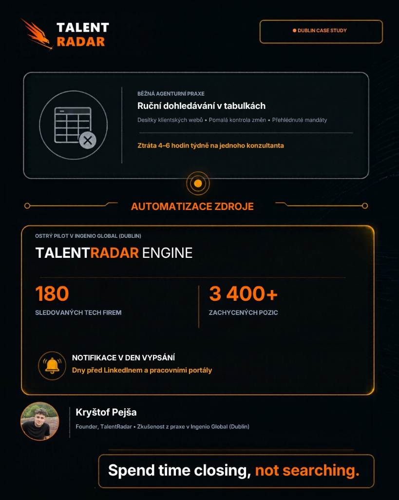

The 4-Day Latency Gap: Why Agencies Lose 40% of Client Roles Before Job Boards Even Index Them
When an enterprise client creates a new requisition, they post it to their direct ATS first. Commercial job boards don't index it for 72 to 96 hours. By the time a vacancy appears on LinkedIn, the exclusive window is already closed.

The Hidden Mechanics of Vacancy Syndication
Ask the average agency recruiter how they discover new client vacancies, and 85% of them will mention one of three tools: LinkedIn Jobs alerts, Google Jobs notifications, or commercial scrapers that aggregate third-party job boards.
What most agency owners fail to realize is that commercial job aggregators operate at the tail end of the vacancy lifecycle.
Across a 60-day telemetry study tracking 180 European enterprise scaleups and corporate employers (spanning Dublin, London, Berlin, Prague, and Amsterdam), we recorded the exact timestamp a vacancy was published on a company's direct Applicant Tracking System (Greenhouse, Lever, Workable, Ashby, SmartRecruiters) and compared it against the timestamp of its appearance on LinkedIn and regional job boards.

The Anatomy of the 4-Day Vacancy Pipeline
Hiring manager signs off. Recruiter posts directly into Greenhouse/Lever/Ashby. Zero cost, immediate live URL.
In-house team scans existing employee referrals and active talent pool. No external recruiters briefed yet.
Generic search engine spiders discover the career URL. Data is parsed and cached in secondary databases.
Role is syndicated or paid promotion purchased. 200+ applicants and 15 contingency headhunters flood in.
Why the "Golden Window" Decides Who Wins the Retainer
In high-value engineering, cloud architecture, and executive search, hiring managers rarely want to work with 10 different agencies. When a critical role opens, their priority is finding a candidate quickly without dealing with resume spam.
If your agency contacts the Head of Engineering or VP of Sales within the first 24 to 36 hours of the vacancy hitting their career site:
- You are the first external voice they hear. They haven't been bombarded by dozens of recruitment emails yet.
- You present matched talent immediately. By leveraging targeted candidate pools before anyone else knows the role exists, you demonstrate proactive market mastery.
- You pitch for an exclusive or prioritized engagement. Once a role is syndicated to LinkedIn, corporate procurement steps in or the hiring manager shuts the door to agencies.
Why Aged Vacancies Are the Easiest Inbound Pitches
Our telemetry revealed that 38% of all enterprise tech roles stay open for more than 35 days without being filled. When a role crosses the 5-week threshold, the internal hiring team has exhausted their initial applicant funnel. The hiring manager is feeling acute pain, deadlines are slipping, and the team is overloaded.
This creates a high-probability BD angle: rather than pitching cold, specialized agencies can query TalentRadar for roles open >35 days, identify the exact hiring manager with 1-click LinkedIn bridge, and deliver a tailored pitch addressing the specific bottleneck.
Chasing Ghost Roles Burns 4–6 Recruiter Hours Weekly
When agencies rely on spreadsheets to track client vacancies, roles that clients quietly filled weeks ago remain in internal trackers. Recruiters spend hours sourcing candidates, tailoring outreach messages, and pitching candidates for jobs that no longer exist.
TalentRadar's Auto-Archive Daemon monitors client ATS endpoints 2× daily. The moment a vacancy is taken down or filled by the employer, the role is automatically removed from active pipelines. Zero ghost roles, zero wasted consultant hours.
Autonomous Intelligence vs. Manual Checking
During my residency at Ingenio Global in Dublin under Rob Magee, I saw firsthand the sheer amount of time senior consultants spent checking client portals. Every Monday, hours were lost copying job links into spreadsheets.
We engineered TalentRadar to solve this fundamentally at the infrastructure layer:
For established agencies with Bullhorn, Datacruit, or Recruitis. TalentRadar acts purely upstream, alerting you at 06:00 and 12:00 UTC and enabling 1-click export to your existing system.
For boutique agencies running on spreadsheets or Notion. Enables a clean, unbloated candidate pipeline directly attached to every discovered role.
Spot your clients’ open roles the hour they post them.
Upload your target client list in CSV or Excel. We will index up to 200 client companies and have your automated scan running within 24 hours. Zero configuration calls required.
Čtyřdenní zpoždění: Proč personální agentury přicházejí o 40 % klientských pozic dříve, než se vůbec objeví na pracovních portálech
Když technologická nebo korporátní firma schválí novou pozici, nejprve ji bezplatně publikuje ve svém primárním ATS systému. Komerční pracovní portály a agregátory ji zaindexují až za 72 až 96 hodin. V okamžiku, kdy se inzerát objeví na LinkedInu, je okno pro získání exkluzivity již dávno uzavřené.
Skrytá mechanika syndikace pracovních pozic
Zeptejte se běžného agenturního konzultanta, jak zjišťuje nové otevřené pozice u svých klientů, a 85 % z nich zmíní jeden ze tří zdrojů: upozornění na LinkedIn Jobs, notifikace Google Jobs nebo komerční agregátory pracovních portálů.
Většina majitelů personálních agentur si však neuvědomuje klíčovou skutečnost: komerční pracovní portály stojí až na samém konci životního cyklu nově vypsané pozice.
V rámci 60denní telemetrické studie v Dublinu jsme sledovali 180 evropských technologických a enterprise firem (napříč Dublinem, Londýnem, Berlínem, Prahou a Amsterdamem). Zaznamenávali jsme přesný čas publikace pozice v primárním ATS systému klienta (Greenhouse, Lever, Workable, Ashby, SmartRecruiters) a porovnávali jej s okamžikem, kdy se stejná pozice poprvé objevila na LinkedInu a lokálních pracovních portálech.
Časová osa náborového požadavku (Den 0 až Den 4)
Hiring manažer schválí rozpočet. Interní HR vloží pozici přímo do Greenhouse/Lever/Ashby. Nulové náklady, okamžitá veřejná URL.
Interní tým prověřuje vlastní databázi a zaměstnanecké referraly. Žádná externí agentura zatím nebyla oslovena.
Vyhledávací roboti třetích stran narazí na kariérní URL, zpracují XML feed a uloží záznam do mezipaměti.
Pozice se propíše na portály nebo je spuštěna placená inzerce. Přichází 200+ CV a 15 konkurenčních agentur.
Proč „Zlaté okno“ rozhoduje o tom, kdo získá mandát
V technologickém náboru, cloudové architektuře a executive searchi žádný hiring manažer nechce jednat s deseti agenturami najednou. Když se otevře kritická role, prioritou manažera je rychle získat relevantní kandidáty bez záplavy nerelevantních životopisů.
Pokud vaše agentura osloví Head of Engineering nebo VP of Sales během prvních 24 až 36 hodin od vypsání pozice na kariérním webu klienta:
- Jste první externí partner, se kterým mluví. Klient ještě není zahlcen desítkami generických akvizičních e-mailů.
- Okamžitě prezentujete relevantní profily z trhu. Tím, že oslovíte předem namapovaný pool kandidátů dříve, než se o roli dozví zbytek trhu, prokazujete skutečný přehled.
- Vyjednáváte exkluzivitu nebo prioritní mandát. Jakmile se pozice propíše na LinkedIn, nastupuje korporátní nákup (PSL) nebo manažer komunikaci s dalšími agenturami zcela uzavře.
Proč jsou dlouhodobě neobsazené pozice nejúčinnějším prodejním argumentem
Naše telemetrie ukázala, že 38 % všech enterprise technologických pozic zůstává otevřených déle než 35 dní bez úspěšného obsazení. Když role překročí hranici pěti týdnů, interní HR tým vyčerpal primární kanály. Hiring manažer čelí skluzu v roadmapě a přetížení týmu.
To vytváří mimořádně silný akviziční úhel: místo studeného volání naslepo si v TalentRadaru vyfiltrujete pozice otevřené déle než 35 dní, jedním klikem přejdete na profil příslušného lídra na LinkedInu a nabídnete okamžité řešení konkrétního úzkého hrdla.
Práce na neexistujících pozicích pálí 4–6 hodin času každého konzultanta týdně
Když agentury sledují klientské pozice v Excelu nebo Notion tabulkách, role, které klient v tichosti obsadil před týdny, zůstávají v tabulkách dál jako „aktivní“. Konzultanti tak tráví hodiny vyhledáváním kandidátů a psaním zpráv na pozice, které už reálně neexistují.
Auto-Archive démon v TalentRadaru kontroluje klientské ATS endpointy 2× denně. V okamžiku, kdy zaměstnavatel inzerát stáhne nebo obsadí, systém roli automaticky přesune do archivu. Nulové „ghost jobs“, nulový promarněný čas.
Autonomní inteligence vs. manuální proklikávání webů
Během mého působení v dublinské agentuře Ingenio Global pod vedením Managing Directora Roba Mageeho jsem zblízka viděl, kolik drahocenného času senioři pálí ručním obcházením kariérních stránek. Každé pondělí dopoledne mizely hodiny přepisováním odkazů do sdílených tabulek.
TalentRadar jsme navrhli tak, aby tento problém vyřešil přímo na infrastrukturní úrovni pro oba typy agentur:
Pro zavedené agentury s Bullhornem, Datacruitem nebo Recruitisem. TalentRadar běží jako autonomní BD radar před vaším ATS, hlásí změny v 06:00 a 12:00 UTC a umožňuje export jedním klikem.
Pro dravé boutique agentury, které fungují v Excelu nebo Notionu. Poskytuje čistou a přehlednou kandidátskou pipeline napojenou přímo na každou zachycenou roli.
Zjistěte o nových pozicích svých klientů v hodinu, kdy je vypíší.
Nahrajte seznam svých klientů v CSV nebo Excelu. Do 24 hodin namapujeme až 200 klientských firem a spustíme automatický ranní sken. Bez zbytečných konfiguračních hovorů.